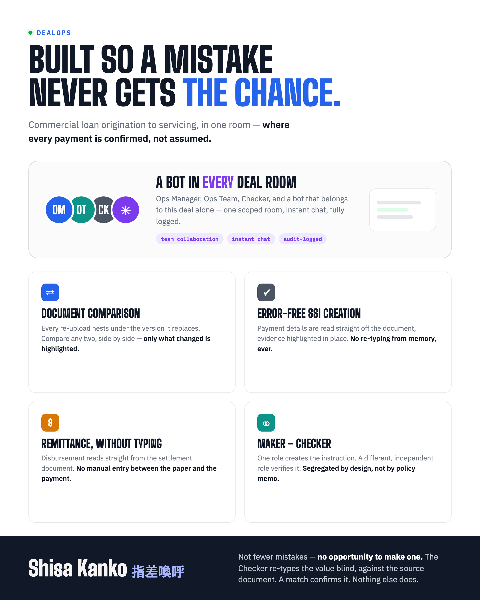
Commercial lending teams run deals through nCino for origination and Loan IQ for servicing — two systems that don't talk to each other. Moving a deal from one to the other today means rekeying terms, chasing documents, and reconciling covenants and payment details by hand. dealops sits in between: a standalone workspace, not an integration into either system.
Deal terms, parties, covenants — like an nCino export.
Deal Room, AI extraction, blind-verified payments, generated settlement statement.
Standing instructions, remittance — ready for Loan IQ.
A quick end-to-end walkthrough before we dig into individual capabilities.
Product, borrower, lenders, and every member — mirrored onto every tile from live deal data, not a stale summary someone has to update.
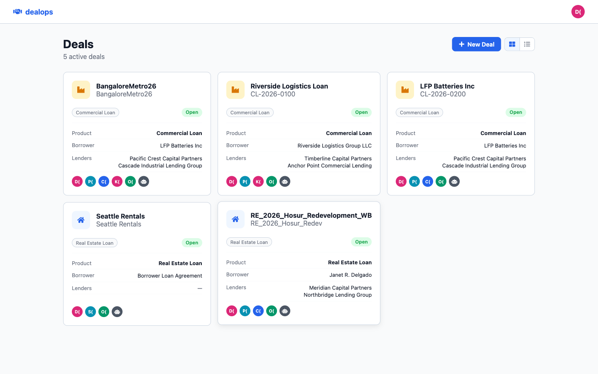
Slack-like, but purpose-built: staffing an Ops Team member happens by @mentioning them right in the conversation — an Ops Manager's mention is what actually grants access, logged automatically, no separate ticket or form.
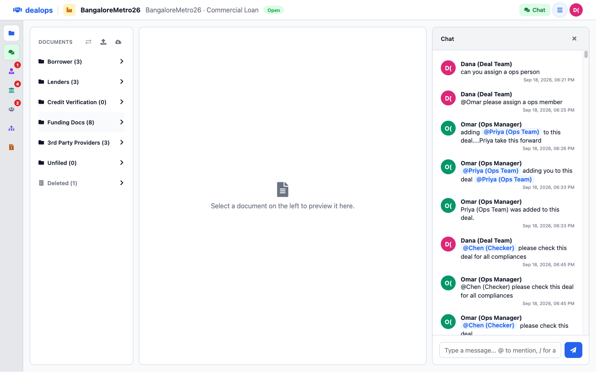
A Deal Team member asks for staffing right in the conversation. The Ops Manager already has standing visibility into every deal, so they see the request immediately — no ticket, no separate tool. They @mention an Ops Team member and a Checker directly in the thread, and the deal's own bot posts the confirmation the moment each one is added.
A slide-out drawer holds the deal's reference, product, status, and roster. For anything else, the deal's own agent answers right in chat — a live summary, not a stale report.
Drag-and-drop or a plain upload button. An LLM reads each document and routes it to the right folder — Borrower, Lenders, Credit Verification, Funding Docs, 3rd Party Providers — no manual sorting.
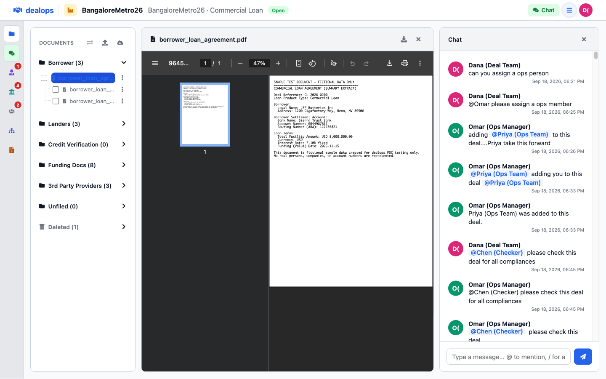
Upload to auto-foldering, start to finish, with the classification result posted back into chat.
One deal, one shared room — a document the Deal Team adds shows up for Ops immediately, already foldered, already logged. No separate handoff step.
A new upload automatically nests under the version it replaces. Compare any two versions side by side and only the real differences are highlighted — here, a single corrected settlement account number between v1 and v2.
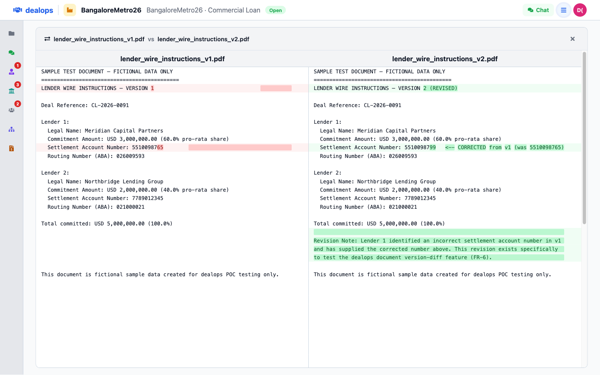
The actual interaction: check two versions in the tree, compare, and read the diff.
Browse a shared Google Cloud Storage bucket right inside the Deal Room — real folder navigation, click a file to preview it, then import. The file is copied server-side and runs through the exact same classification pipeline as a normal upload.
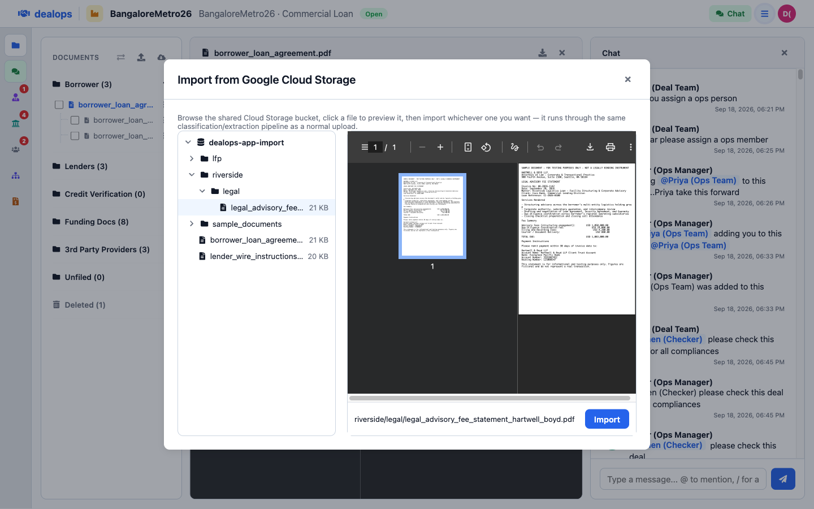
Every panel — documents, chat, and the various side views — collapses independently, so the screen can be all about whatever you're actually looking at right now.
Members by role, documents by folder, standing instructions by status, and the current settlement document — a single-glance summary of exactly where a deal stands.
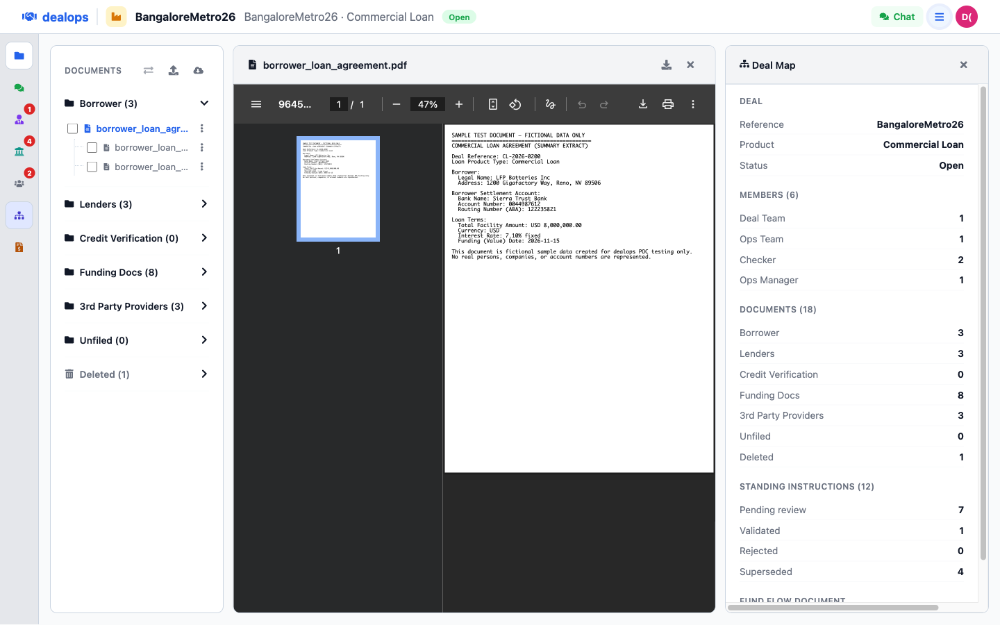
An LLM extracts bank name, account, and routing details straight from uploaded documents and submits a standing instruction to Loan IQ automatically. Account numbers stay masked everywhere — even here — until a Checker independently confirms them.
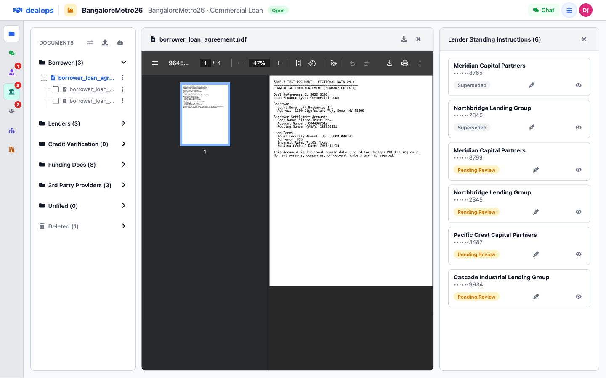
@mention the deal's agent for a live summary, a document list, or standing-instruction status — right in the chat, with slash-command autocomplete so nobody has to remember the syntax.
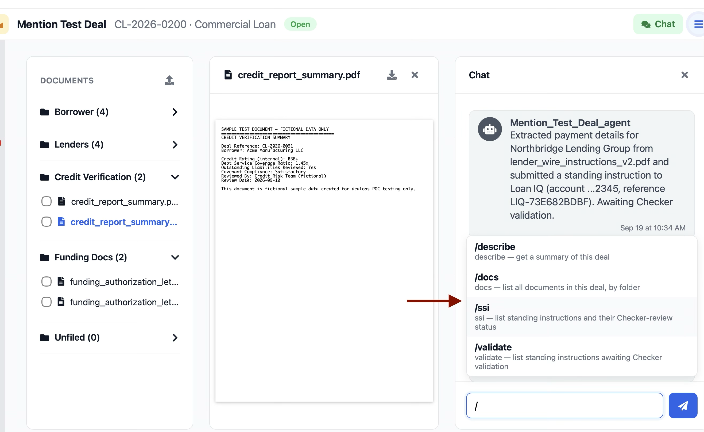
The safety mechanism at the center of dealops, modeled on Japanese rail practice: a value is never accepted just because a machine read it. A human has to point, call it out, and independently reproduce it — blind.
A Checker re-types the account number themselves, from the source document — the extracted value is never shown to them first. A match is the only thing that confirms it.
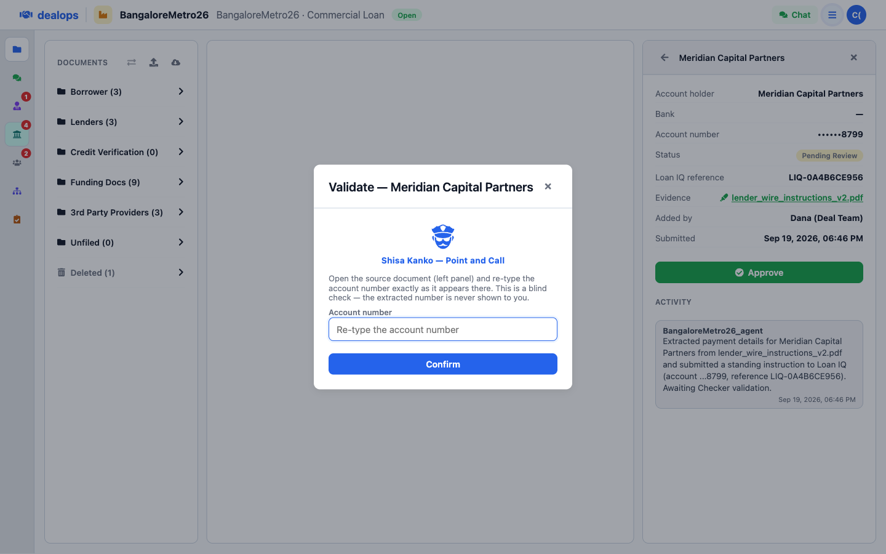
Opening the evidence, reading the highlighted source document, and typing the number blind.
Every standing instruction links back to the source document with the account holder, bank, account, and routing details highlighted right where extraction found them — and every Checker outcome, match or mismatch, is logged with who and when.
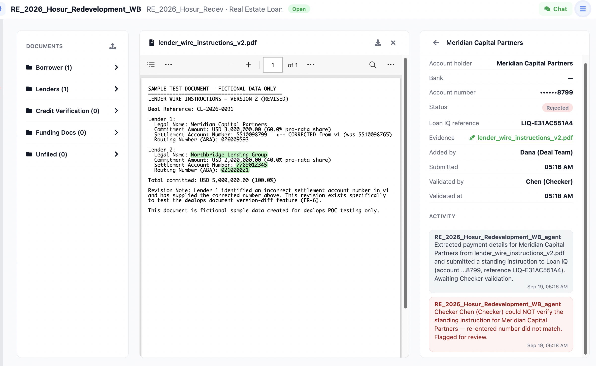
Chat messages and system events — uploads, classifications, extractions, validations — merge into a single chronological log per deal. Nothing is ever edited or deleted out of it.
Enter the loan economics once — borrower, lenders, and third parties are pulled automatically from documents already on file. The reconciliation view confirms every party actually appears in the statement driving remittance.
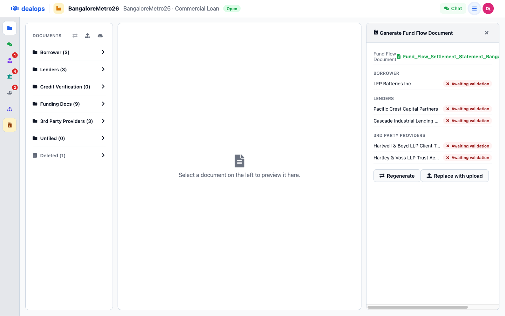
Every fee gets its own labeled section, naming the actual payee — not one lump figure. Net proceeds to the borrower is derived from the other fees, so Sources always equals Uses, not by coincidence.
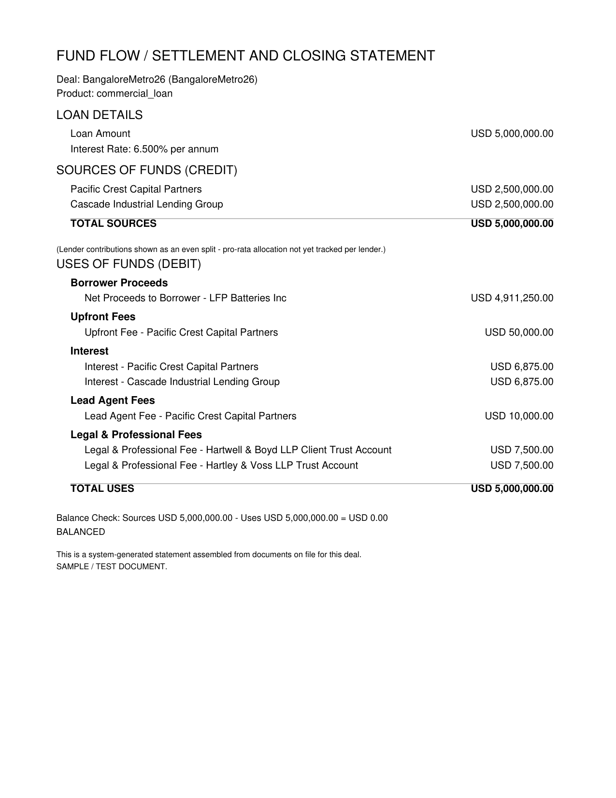
Each party reads Ready only when its standing instruction is Checker-validated and confirmed present in the settlement document — per party, not deal-wide. One lender clearing never unblocks another.
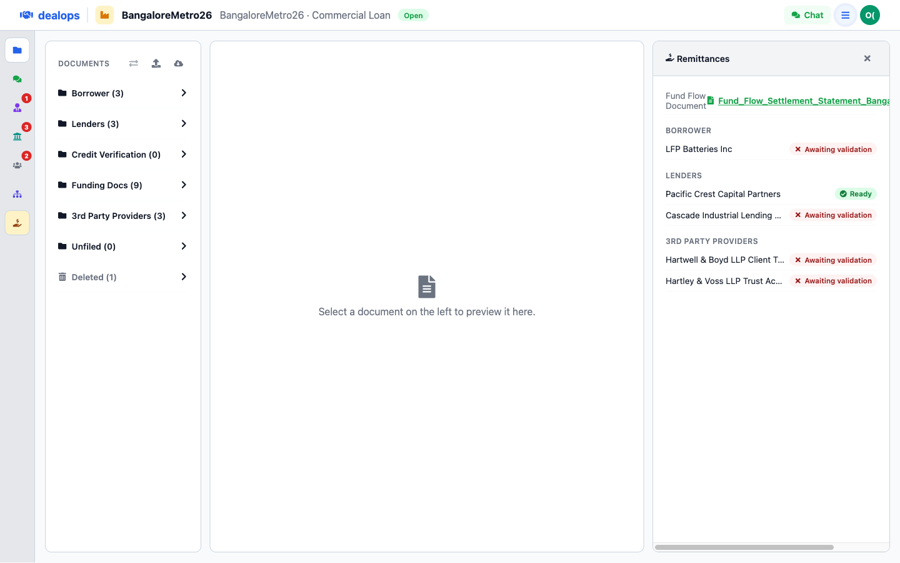
A single view for the Ops Manager: every standing instruction still awaiting review, who's supposed to be acting on it, and how long it's been waiting. Rows turn orange past 4 hours, red past 8 — nothing stalls quietly.
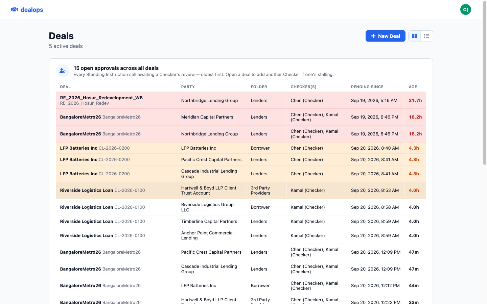
A Checker's own pending reviews surface the moment they log in — broken down per deal, one click into exactly where the work is.
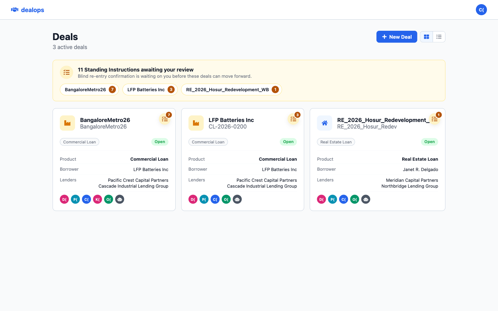
dealops is deployed and demoable today — every capability in this deck is running against real data, not mockups.
Live demo — 34.56.167.199.sslip.io